2026 National 5 Chemistry - Paper 2 questions
Source: Scottish Qualifications Authority (SQA) / Qualifications Scotland. This is a StemInteract HTML companion, not an official HTML edition. Selectable text is supplied alongside original page images. Use the images or original PDF for equations, powers, fractions, vector notation, tables and diagrams; text extraction cannot fully preserve mathematical layout.
Jump to a question
PDF page 1
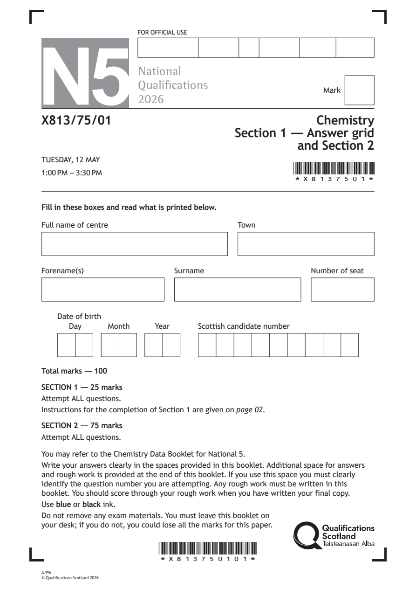
Selectable page text
FOR OFFICIAL USE
N5
National
Qualications
Mark
2026
X813/75/01 Chemistry
Section 1 — Answer grid
and Section 2
TUESDAY, 12 MAY
1:00 PM – 3:30 PM
*X8137501*
Fill in these boxes and read what is printed below.
Full name of centre Town
Forename(s) Surname Number of seat
Date of birth
Day Month Year Scottish candidate number
Total marks — 100
SECTION 1 — 25 marks
Attempt ALL questions.
Instructions for the completion of Section 1 are given on page 02.
SECTION 2 — 75 marks
Attempt ALL questions.
You may refer to the Chemistry Data Booklet for National 5.
Write your answers clearly in the spaces provided in this booklet. Additional space for answers
and rough work is provided at the end of this booklet. If you use this space you must clearly
identify the question number you are attempting. Any rough work must be written in this
booklet. You should score through your rough work when you have written your final copy.
Use blue or black ink.
Do not remove any exam materials. You must leave this booklet on
your desk; if you do not, you could lose all the marks for this paper.
*X813750101*
A/PB
© Qualifications Scotland 2026PDF page 2
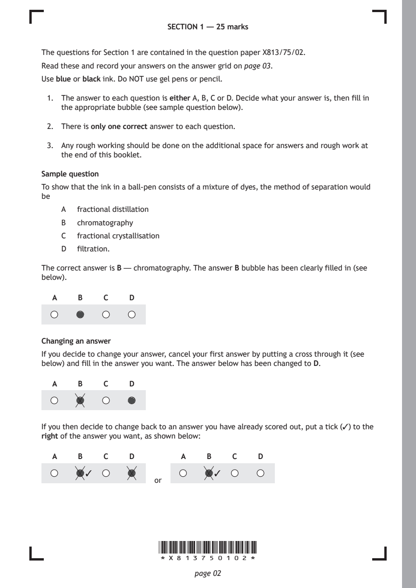
Selectable page text
SECTION 1 — 25 marks
The questions for Section 1 are contained in the question paper X813/75/02.
Read these and record your answers on the answer grid on page 03.
Use blue or black ink. Do NOT use gel pens or pencil.
1. The answer to each question is either A, B, C or D. Decide what your answer is, then fill in
the appropriate bubble (see sample question below).
2. There is only one correct answer to each question.
3. Any rough working should be done on the additional space for answers and rough work at
the end of this booklet.
Sample question
To show that the ink in a ball‑pen consists of a mixture of dyes, the method of separation would
be
A fractional distillation
B chromatography
C fractional crystallisation
D filtration.
The correct answer is B — chromatography. The answer B bubble has been clearly filled in (see
below).
A B C D
Changing an answer
If you decide to change your answer, cancel your first answer by putting a cross through it (see
below) and fill in the answer you want. The answer below has been changed to D.
A B C D
If you then decide to change back to an answer you have already scored out, put a tick (✓) to the
right of the answer you want, as shown below:
A B C D A B C D
or
*X813750102*
page 02PDF page 3
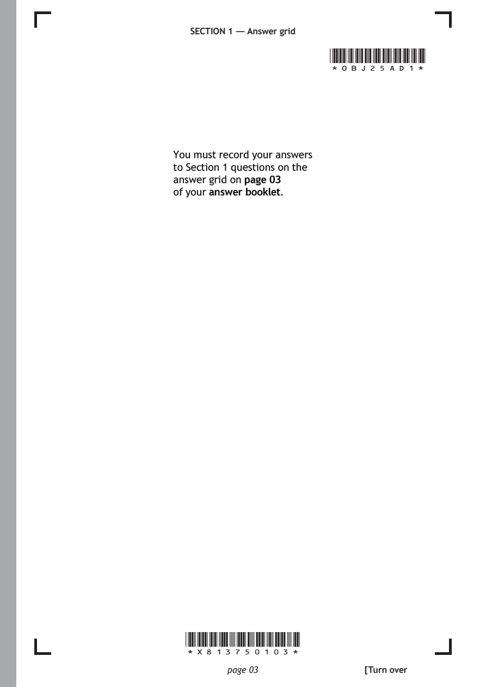
Selectable page text
SECTION 1 — Answer grid
*OBJ25AD1*
A B C D
1
2
3
4
5
6
7
8
9
10
11
12
13
14
15
16
17
18
19
20
21
22
23
24
25
*X813750103*
page 03 [Turn overPDF page 4
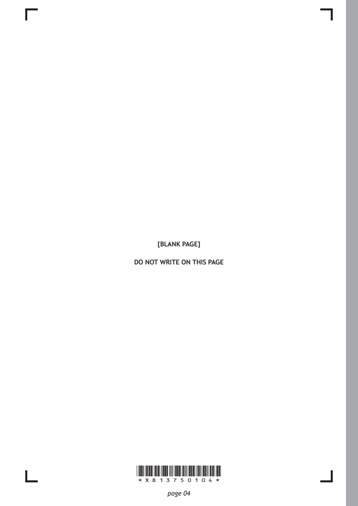
Selectable page text
[BLANK PAGE]
DO NOT WRITE ON THIS PAGE
*X813750104*
page 04PDF page 5

Selectable page text
[Turn over for SECTION 2
DO NOT WRITE ON THIS PAGE
*X813750105*
page 05PDF page 6
Paper 2, Question 1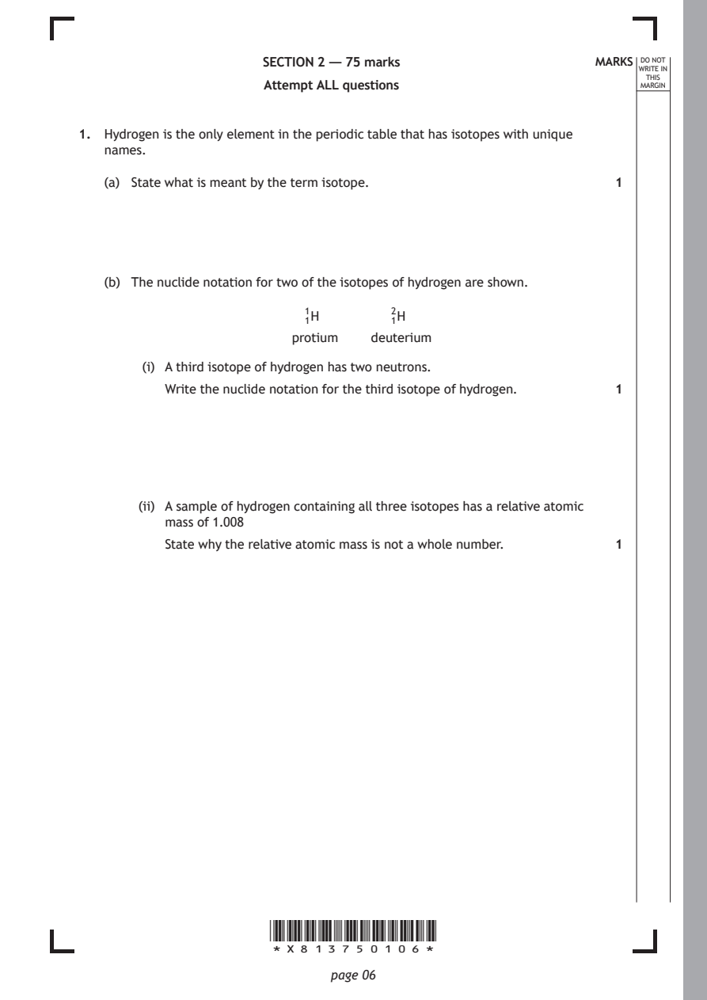
Selectable page text
SECTION 2 — 75 marks MARKS _{W}^{D}_{R}^{O}_{I} _{T}^{N}OT
E IN
THIS
Attempt ALL questions MARGIN
1. Hydrogen is the only element in the periodic table that has isotopes with unique
names.
(a) State what is meant by the term isotope. 1
(b) The nuclide notation for two of the isotopes of hydrogen are shown.
1H 2H
1 1
protium deuterium
(i) A third isotope of hydrogen has two neutrons.
Write the nuclide notation for the third isotope of hydrogen. 1
(ii) A sample of hydrogen containing all three isotopes has a relative atomic
mass of 1.008
State why the relative atomic mass is not a whole number. 1
*X813750106*
page 06PDF page 7
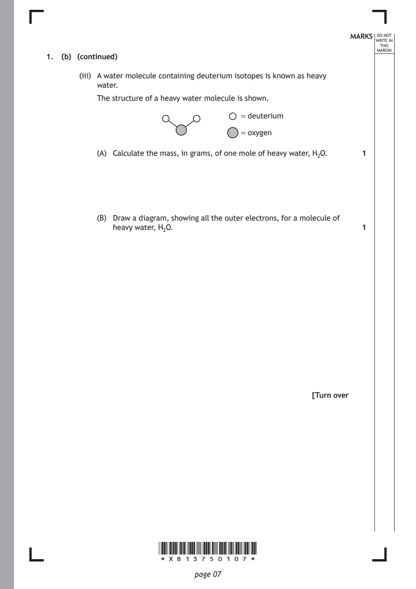
Selectable page text
MARKS _{W}^{D}_{R}^{O}_{I} _{T}^{N}OT
E IN
THIS
MARGIN
1. (b) (continued)
(iii) A water molecule containing deuterium isotopes is known as heavy
water.
The structure of a heavy water molecule is shown.
= deuterium
= oxygen
(A) Calculate the mass, in grams, of one mole of heavy water, H₂O. 1
(B) Draw a diagram, showing all the outer electrons, for a molecule of
heavy water, H₂O. 1
[Turn over
*X813750107*
page 07PDF page 8
Paper 2, Question 2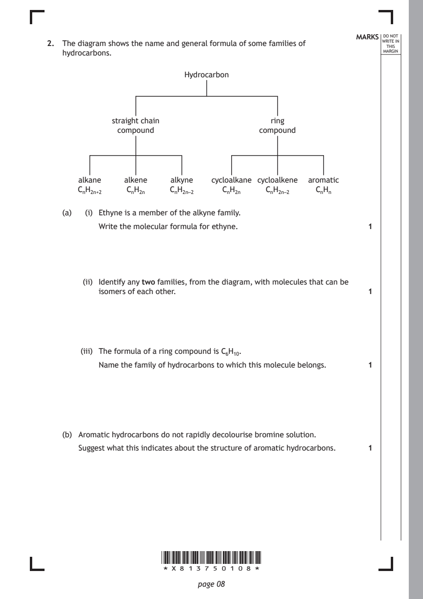
Selectable page text
MARKS _{W}^{D}_{R}^{O}_{I} _{T}^{N}OT
2. The diagram shows the name and general formula of some families of E IN
THIS
hydrocarbons. MARGIN
Hydrocarbon
straight chain ring
compound compound
alkane alkene alkyne cycloalkane cycloalkene aromatic
CₙH₂ₙ₊₂ CₙH₂ₙ CₙH₂ₙ_{–}₂ CₙH₂ₙ CₙH₂ₙ_{–}₂ CₙHₙ
(a) (i) Ethyne is a member of the alkyne family.
Write the molecular formula for ethyne. 1
(ii) Identify any two families, from the diagram, with molecules that can be
isomers of each other. 1
(iii) The formula of a ring compound is C₆H₁₀.
Name the family of hydrocarbons to which this molecule belongs. 1
(b) Aromatic hydrocarbons do not rapidly decolourise bromine solution.
Suggest what this indicates about the structure of aromatic hydrocarbons. 1
*X813750108*
page 08PDF page 9
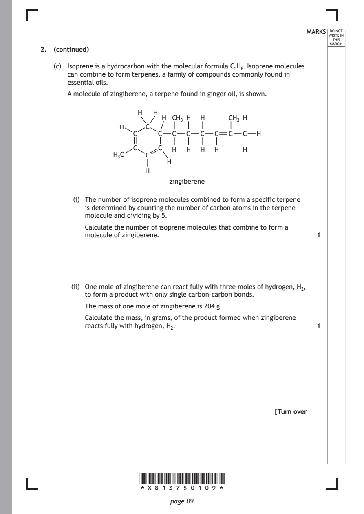
Selectable page text
MARKS _{W}^{D}_{R}^{O}_{I} _{T}^{N}OT
E IN
THIS
MARGIN
2. (continued)
(c) Isoprene is a hydrocarbon with the molecular formula C₅H₈. Isoprene molecules
can combine to form terpenes, a family of compounds commonly found in
essential oils.
A molecule of zingiberene, a terpene found in ginger oil, is shown.
H H
H CH₃ H H CH₃ H
H C
C C C C C C C C H
C C H H H H H
H₃C C
H
H
zingiberene
(i) The number of isoprene molecules combined to form a specific terpene
is determined by counting the number of carbon atoms in the terpene
molecule and dividing by 5.
Calculate the number of isoprene molecules that combine to form a
molecule of zingiberene. 1
(ii) One mole of zingiberene can react fully with three moles of hydrogen, H₂,
to form a product with only single carbon‑carbon bonds.
The mass of one mole of zingiberene is 204 g.
Calculate the mass, in grams, of the product formed when zingiberene
reacts fully with hydrogen, H₂. 1
[Turn over
*X813750109*
page 09PDF page 10
Paper 2, Question 3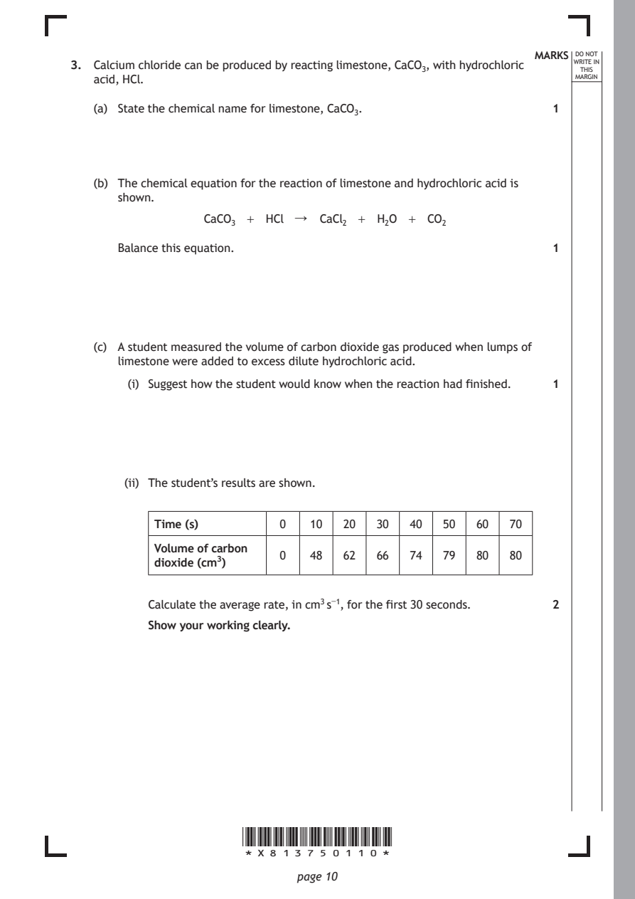
Selectable page text
MARKS _{W}^{D}_{R}^{O}_{I} _{T}^{N}OT
3. Calcium chloride can be produced by reacting limestone, CaCO₃, with hydrochloric E IN
THIS
acid, HCl. MARGIN
(a) State the chemical name for limestone, CaCO₃. 1
(b) The chemical equation for the reaction of limestone and hydrochloric acid is
shown.
CaCO₃ + HCl ↓ CaCl₂ + H₂O + CO₂
Balance this equation. 1
(c) A student measured the volume of carbon dioxide gas produced when lumps of
limestone were added to excess dilute hydrochloric acid.
(i) Suggest how the student would know when the reaction had finished. 1
(ii) The student’s results are shown.
Time (s) 0 10 20 30 40 50 60 70
Volume of carbon
0 48 62 66 74 79 80 80
dioxide (cm³)
Calculate the average rate, in cm³ s⁻¹, for the first 30 seconds. 2
Show your working clearly.
*X813750110*
page 10PDF page 11
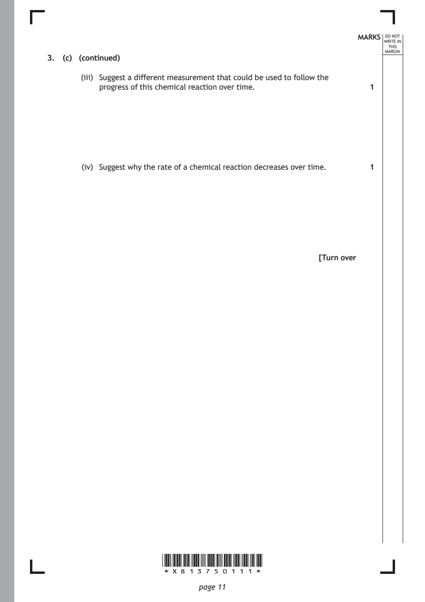
Selectable page text
MARKS _{W}^{D}_{R}^{O}_{I} _{T}^{N}OT
E IN
THIS
MARGIN
3. (c) (continued)
(iii) Suggest a different measurement that could be used to follow the
progress of this chemical reaction over time. 1
(iv) Suggest why the rate of a chemical reaction decreases over time. 1
[Turn over
*X813750111*
page 11PDF page 12
Paper 2, Question 4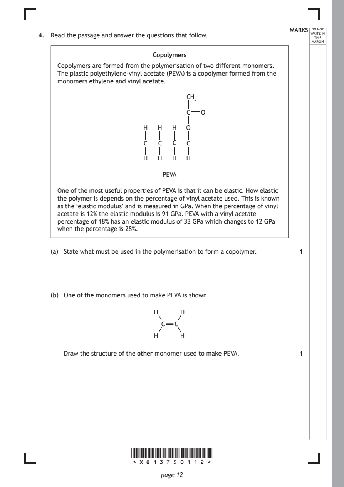
Selectable page text
MARKS _{W}^{D}_{R}^{O}_{I} _{T}^{N}OT
4. Read the passage and answer the questions that follow. E IN
THIS
MARGIN
Copolymers
Copolymers are formed from the polymerisation of two different monomers.
The plastic polyethylene‑vinyl acetate (PEVA) is a copolymer formed from the
monomers ethylene and vinyl acetate.
CH₃
C O
H H H O
C C C C
H H H H
PEVA
One of the most useful properties of PEVA is that it can be elastic. How elastic
the polymer is depends on the percentage of vinyl acetate used. This is known
as the ‘elastic modulus’ and is measured in GPa. When the percentage of vinyl
acetate is 12% the elastic modulus is 91 GPa. PEVA with a vinyl acetate
percentage of 18% has an elastic modulus of 33 GPa which changes to 12 GPa
when the percentage is 28%.
(a) State what must be used in the polymerisation to form a copolymer.
(b) One of the monomers used to make PEVA is shown.
H
C C
*X813750112*
page 12
H
H
H
1
Draw the structure of the other monomer used to make PEVA. 1PDF page 13
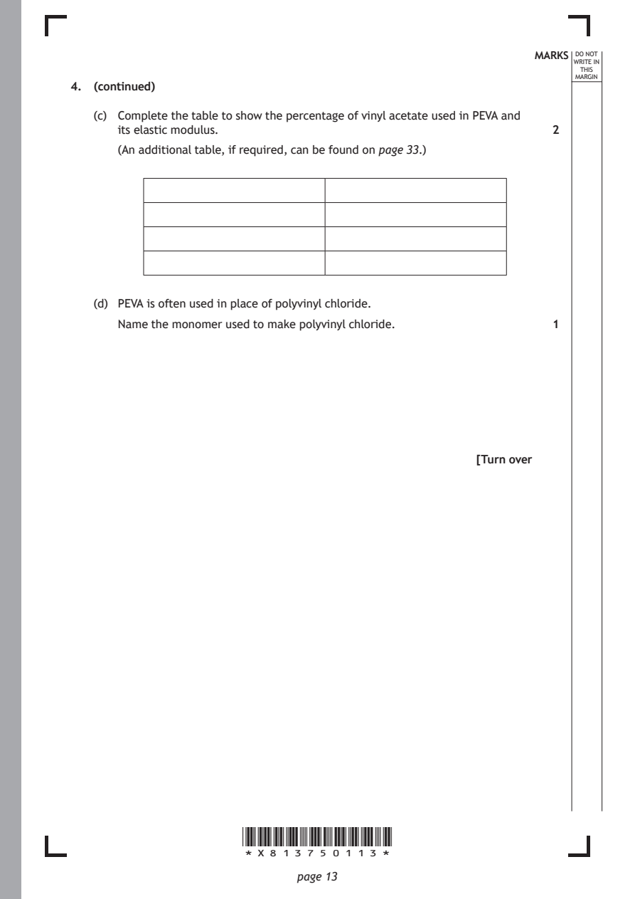
Selectable page text
MARKS _{W}^{D}_{R}^{O}_{I} _{T}^{N}OT
E IN
THIS
MARGIN
4. (continued)
(c) Complete the table to show the percentage of vinyl acetate used in PEVA and
its elastic modulus. 2
(An additional table, if required, can be found on page 33.)
(d) PEVA is often used in place of polyvinyl chloride.
Name the monomer used to make polyvinyl chloride. 1
[Turn over
*X813750113*
page 13PDF page 14
Paper 2, Question 5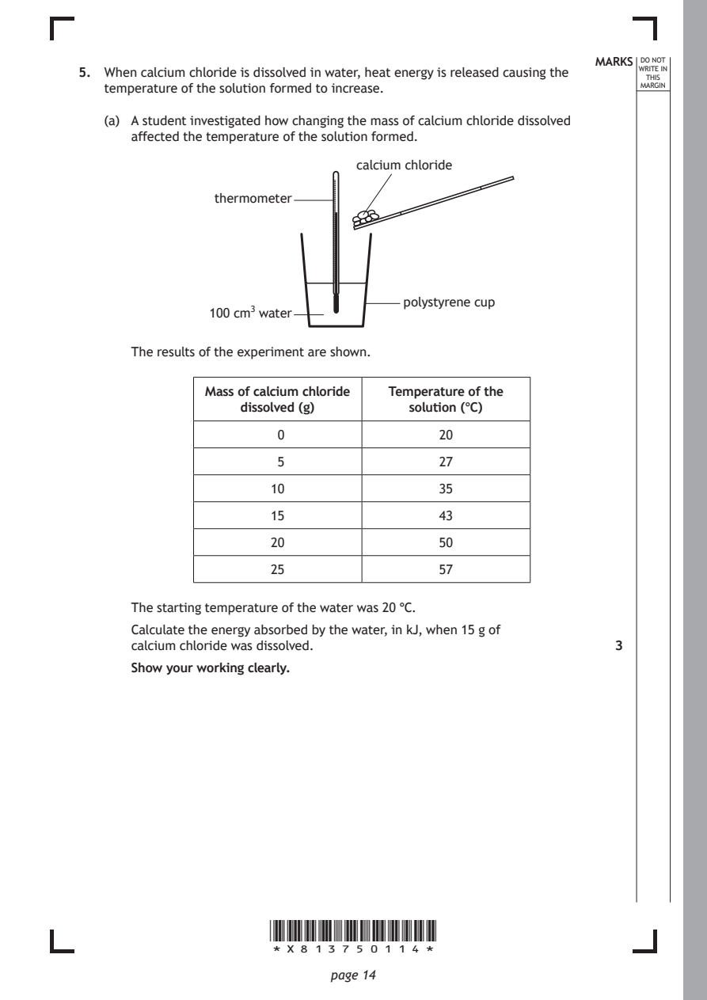
Selectable page text
MARKS _{W}^{D}_{R}^{O}_{I} _{T}^{N}OT
5. When calcium chloride is dissolved in water, heat energy is released causing the E IN
THIS
temperature of the solution formed to increase. MARGIN
(a) A student investigated how changing the mass of calcium chloride dissolved
affected the temperature of the solution formed.
calcium chloride
thermometer
polystyrene cup
100 cm³ water
The results of the experiment are shown.
Mass of calcium chloride Temperature of the
dissolved (g) solution (°C)
0 20
5 27
10 35
15 43
20 50
25 57
The starting temperature of the water was 20 °C.
Calculate the energy absorbed by the water, in kJ, when 15 g of
calcium chloride was dissolved. 3
Show your working clearly.
*X813750114*
page 14PDF page 15
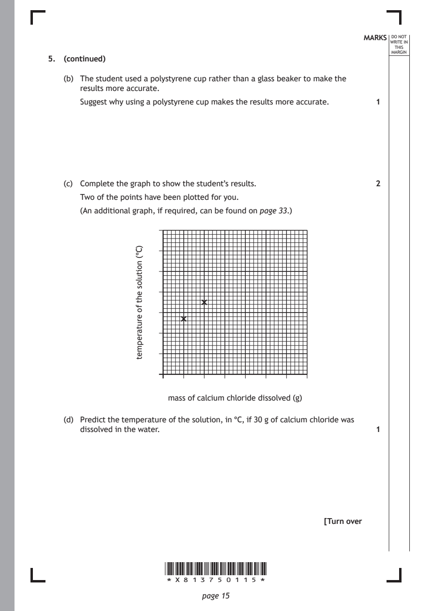
Selectable page text
MARKS _{W}^{D}_{R}^{O}_{I} _{T}^{N}OT
E IN
THIS
MARGIN
5. (continued)
(b) The student used a polystyrene cup rather than a glass beaker to make the
results more accurate.
Suggest why using a polystyrene cup makes the results more accurate.
(c) Complete the graph to show the student’s results.
Two of the points have been plotted for you.
(An additional graph, if required, can be found on page 33.)
mass of calcium chloride dissolved (g)
*X813750115*
page 15
)C°(
noitulos
eht
fo
erutarepmet
1
2
(d) Predict the temperature of the solution, in °C, if 30 g of calcium chloride was
dissolved in the water. 1
[Turn overPDF page 16
Paper 2, Question 6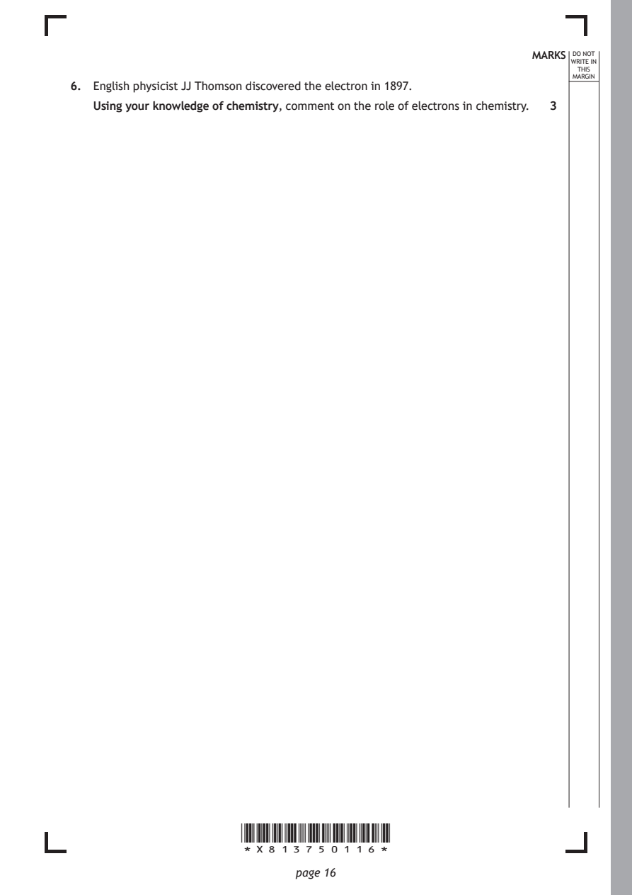
Selectable page text
MARKS _{W}^{D}_{R}^{O}_{I} _{T}^{N}OT
E IN
THIS
MARGIN
6. English physicist JJ Thomson discovered the electron in 1897.
Using your knowledge of chemistry, comment on the role of electrons in chemistry. 3
*X813750116*
page 16PDF page 17
Paper 2, Question 7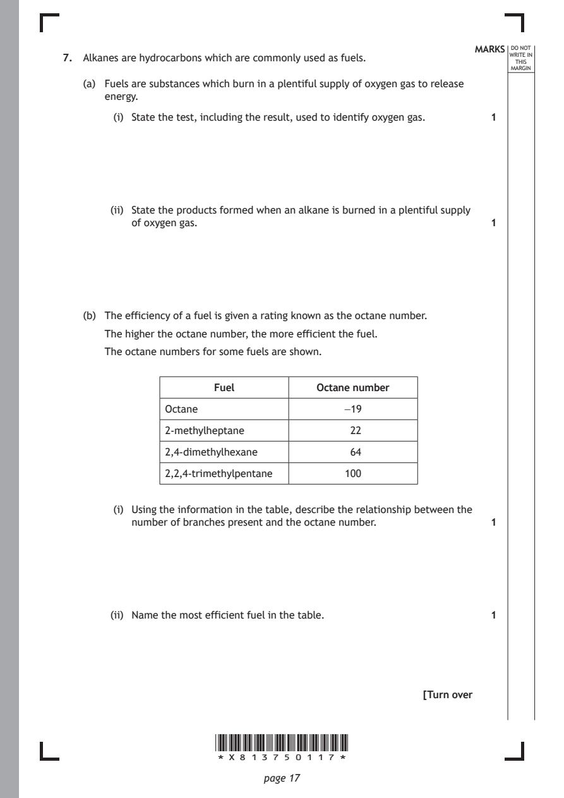
Selectable page text
MARKS _{W}^{D}_{R}^{O}_{I} _{T}^{N}OT
7. Alkanes are hydrocarbons which are commonly used as fuels. E IN
THIS
MARGIN
(a) Fuels are substances which burn in a plentiful supply of oxygen gas to release
energy.
(i) State the test, including the result, used to identify oxygen gas. 1
(ii) State the products formed when an alkane is burned in a plentiful supply
of oxygen gas. 1
(b) The efficiency of a fuel is given a rating known as the octane number.
The higher the octane number, the more efficient the fuel.
The octane numbers for some fuels are shown.
Fuel Octane number
Octane -19
2‑methylheptane 22
2,4‑dimethylhexane 64
2,2,4‑trimethylpentane 100
(i) Using the information in the table, describe the relationship between the
number of branches present and the octane number. 1
(ii) Name the most efficient fuel in the table. 1
[Turn over
*X813750117*
page 17PDF page 18
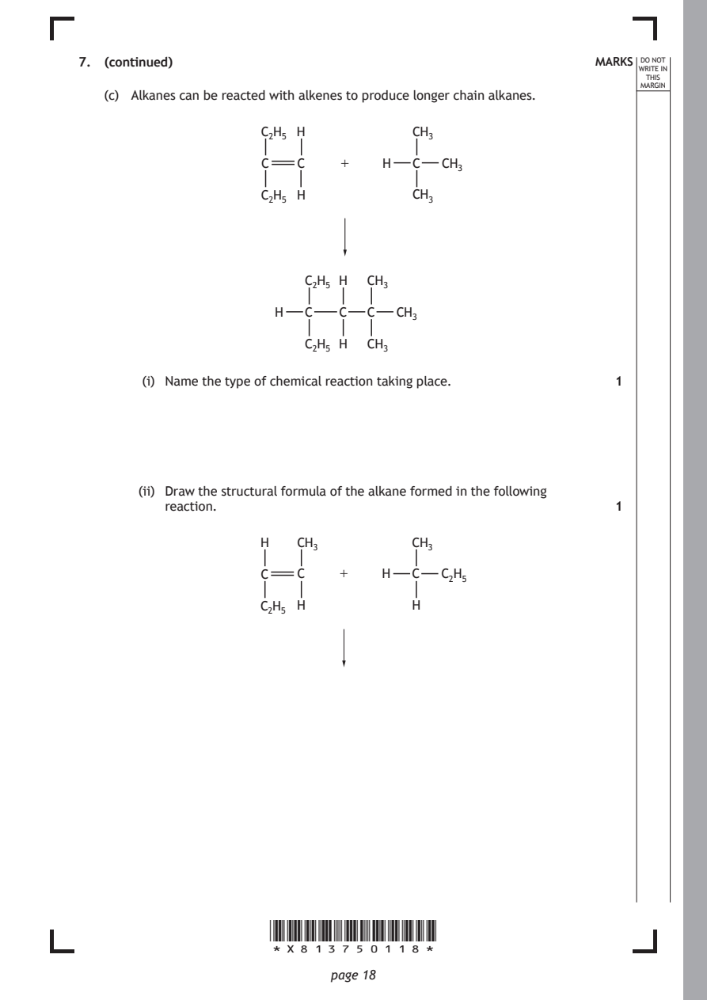
Selectable page text
7. (continued) MARKS _{W}^{D}_{R}^{O}_{I} _{T}^{N}OT
E IN
THIS
MARGIN
(c) Alkanes can be reacted with alkenes to produce longer chain alkanes.
C₂H₅ H CH₃
C C + H C CH₃
C₂H₅ H CH₃
C₂H₅ H CH₃
H C C C CH₃
C₂H₅ H CH₃
(i) Name the type of chemical reaction taking place. 1
(ii) Draw the structural formula of the alkane formed in the following
reaction. 1
H CH₃ CH₃
C C + H C C₂H₅
C₂H₅ H H
*X813750118*
page 18PDF page 19
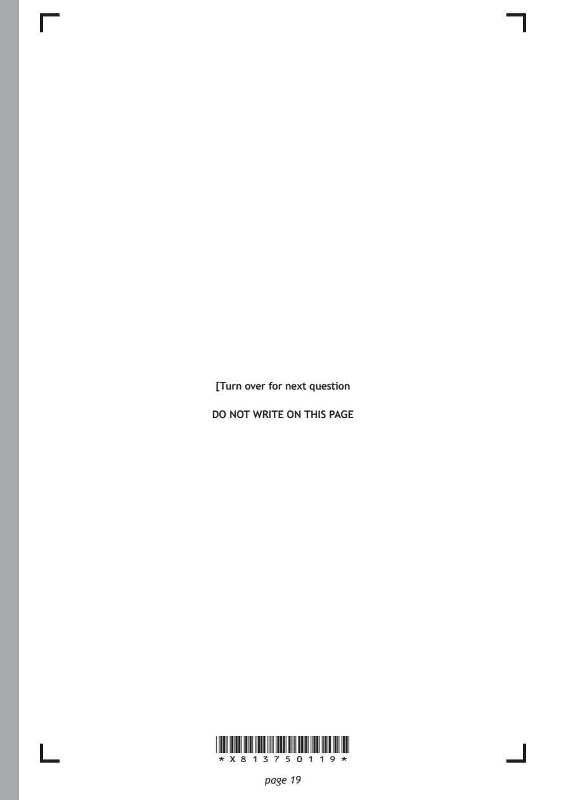
Selectable page text
[Turn over for next question
DO NOT WRITE ON THIS PAGE
*X813750119*
page 19PDF page 20
Paper 2, Question 8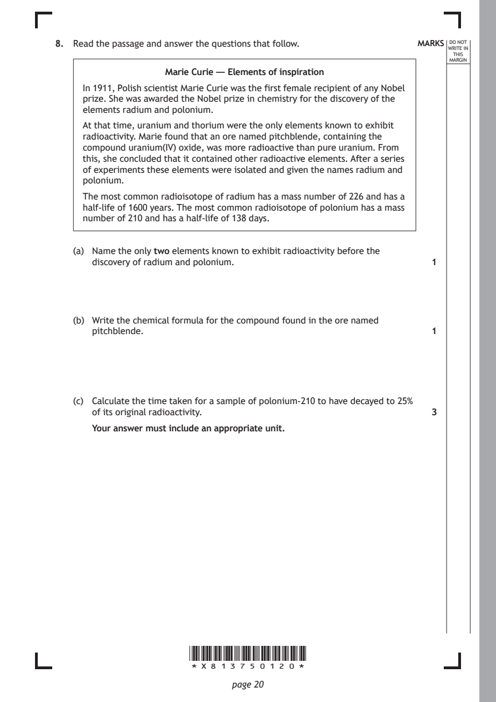
Selectable page text
8. Read the passage and answer the questions that follow. MARKS _{W}^{D}_{R}^{O}_{I} _{T}^{N}OT
E IN
THIS
MARGIN
Marie Curie — Elements of inspiration
In 1911, Polish scientist Marie Curie was the first female recipient of any Nobel
prize. She was awarded the Nobel prize in chemistry for the discovery of the
elements radium and polonium.
At that time, uranium and thorium were the only elements known to exhibit
radioactivity. Marie found that an ore named pitchblende, containing the
compound uranium(IV) oxide, was more radioactive than pure uranium. From
this, she concluded that it contained other radioactive elements. After a series
of experiments these elements were isolated and given the names radium and
polonium.
The most common radioisotope of radium has a mass number of 226 and has a
half‑life of 1600 years. The most common radioisotope of polonium has a mass
number of 210 and has a half‑life of 138 days.
(a) Name the only two elements known to exhibit radioactivity before the
discovery of radium and polonium. 1
(b) Write the chemical formula for the compound found in the ore named
pitchblende. 1
(c) Calculate the time taken for a sample of polonium‑210 to have decayed to 25%
of its original radioactivity. 3
Your answer must include an appropriate unit.
*X813750120*
page 20PDF page 21
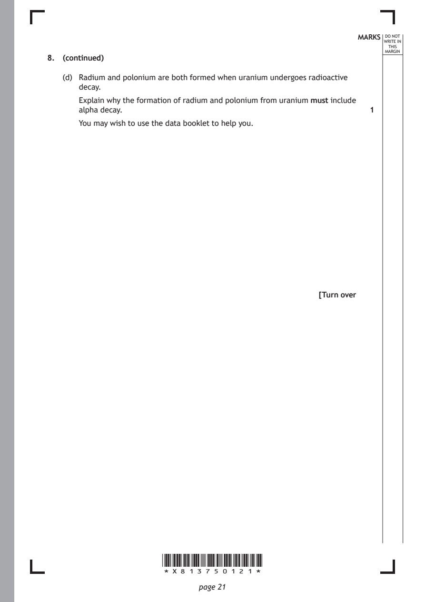
Selectable page text
MARKS _{W}^{D}_{R}^{O}_{I} _{T}^{N}OT
E IN
THIS
MARGIN
8. (continued)
(d) Radium and polonium are both formed when uranium undergoes radioactive
decay.
Explain why the formation of radium and polonium from uranium must include
alpha decay. 1
You may wish to use the data booklet to help you.
[Turn over
*X813750121*
page 21PDF page 22
Paper 2, Question 9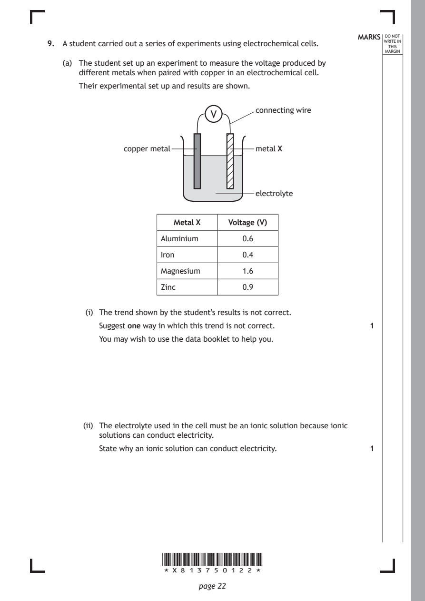
Selectable page text
MARKS _{W}^{D}_{R}^{O}_{I} _{T}^{N}OT
9. A student carried out a series of experiments using electrochemical cells. E IN
THIS
MARGIN
(a) The student set up an experiment to measure the voltage produced by
different metals when paired with copper in an electrochemical cell.
Their experimental set up and results are shown.
connecting wire
V
copper metal metal X
electrolyte
Metal X Voltage (V)
Aluminium 0.6
Iron 0.4
Magnesium 1.6
Zinc 0.9
(i) The trend shown by the student’s results is not correct.
Suggest one way in which this trend is not correct. 1
You may wish to use the data booklet to help you.
(ii) The electrolyte used in the cell must be an ionic solution because ionic
solutions can conduct electricity.
State why an ionic solution can conduct electricity. 1
*X813750122*
page 22PDF page 23
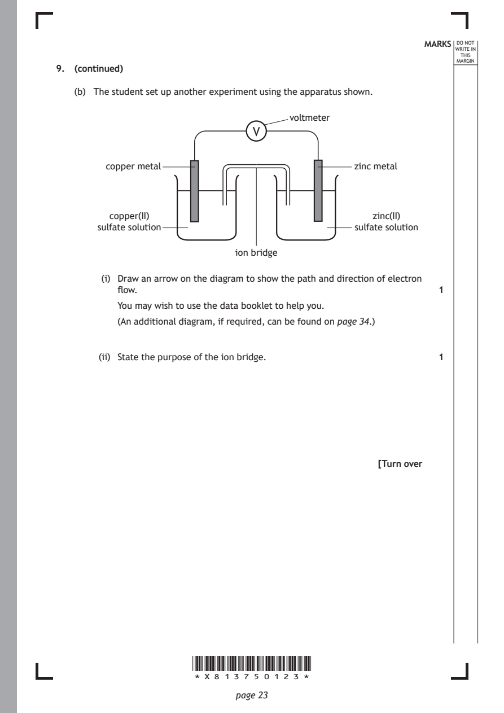
Selectable page text
MARKS _{W}^{D}_{R}^{O}_{I} _{T}^{N}OT
E IN
THIS
MARGIN
9. (continued)
(b) The student set up another experiment using the apparatus shown.
voltmeter
V
copper metal zinc metal
copper(II) zinc(II)
sulfate solution sulfate solution
ion bridge
(i) Draw an arrow on the diagram to show the path and direction of electron
flow. 1
You may wish to use the data booklet to help you.
(An additional diagram, if required, can be found on page 34.)
(ii) State the purpose of the ion bridge. 1
[Turn over
*X813750123*
page 23PDF page 24
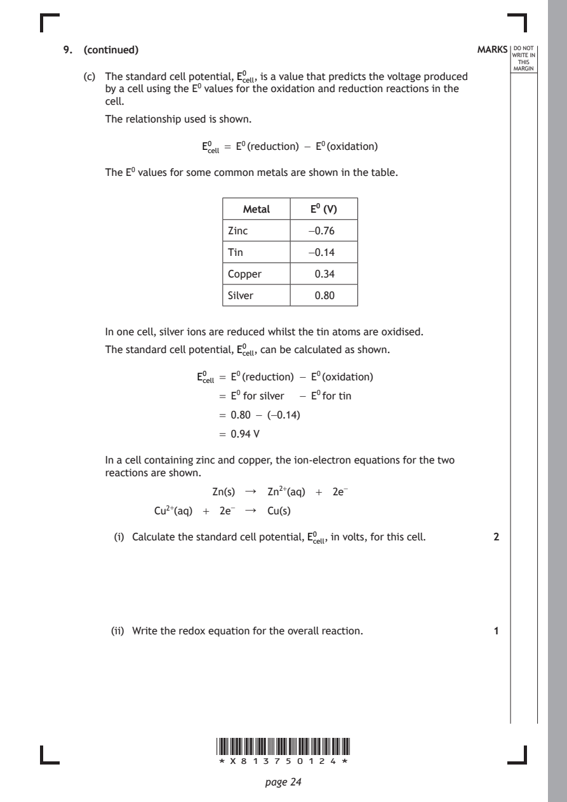
Selectable page text
9. (continued) MARKS _{W}^{D}_{R}^{O}_{I} _{T}^{N}OT
E IN
THIS
MARGIN
(c) The standard cell potential, E⁰_{c} , is a value that predicts the voltage produced
by a cell using the E⁰ values for^{e} ^{l}^{l}the oxidation and reduction reactions in the
cell.
The relationship used is shown.
E⁰_{c}ₑₗₗ = E⁰ (reduction) - E⁰ (oxidation)
The E⁰ values for some common metals are shown in the table.
Metal E⁰ (V)
Zinc -0.76
Tin -0.14
Copper 0.34
Silver 0.80
In one cell, silver ions are reduced whilst the tin atoms are oxidised.
The standard cell potential, E⁰_{c}ₑₗₗ, can be calculated as shown.
E⁰_{c}ₑₗₗ = E⁰ (reduction) - E⁰ (oxidation)
= E⁰ for silver - E⁰ for tin
= 0.80 - (-0.14)
= 0.94 V
In a cell containing zinc and copper, the ion‑electron equations for the two
reactions are shown.
Zn(s) ↓ Zn²⁺(aq) + 2e⁻
Cu²⁺(aq) + 2e⁻ ↓ Cu(s)
(i) Calculate the standard cell potential, E⁰_{c}ₑₗₗ, in volts, for this cell. 2
(ii) Write the redox equation for the overall reaction. 1
*X813750124*
page 24PDF page 25
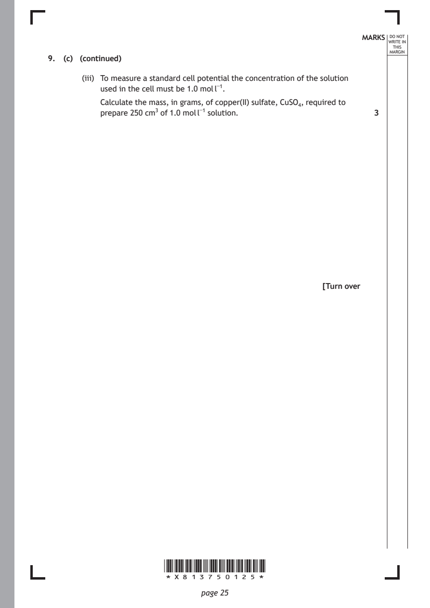
Selectable page text
MARKS _{W}^{D}_{R}^{O}_{I} _{T}^{N}OT
E IN
THIS
MARGIN
9. (c) (continued)
(iii) To measure a standard cell potential the concentration of the solution
used in the cell must be 1.0 mol l⁻¹.
Calculate the mass, in grams, of copper(II) sulfate, CuSO₄, required to
prepare 250 cm³ of 1.0 mol l⁻¹ solution. 3
[Turn over
*X813750125*
page 25PDF page 26
Paper 2, Question 10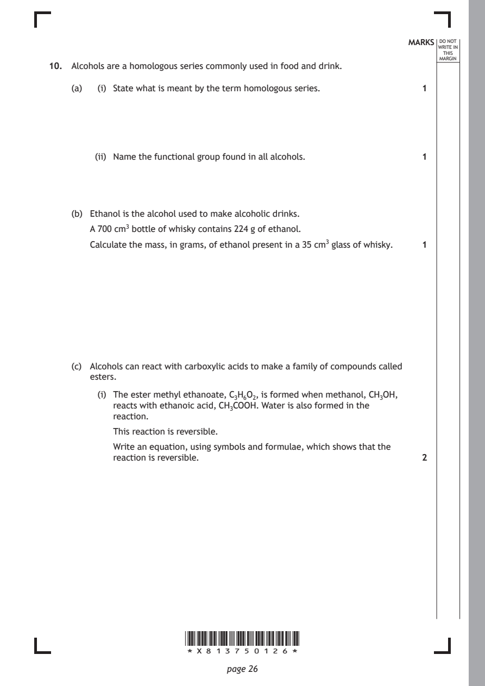
Selectable page text
MARKS _{W}^{D}_{R}^{O}_{I} _{T}^{N}OT
E IN
THIS
MARGIN
10. Alcohols are a homologous series commonly used in food and drink.
(a) (i) State what is meant by the term homologous series. 1
(ii) Name the functional group found in all alcohols. 1
(b) Ethanol is the alcohol used to make alcoholic drinks.
A 700 cm³ bottle of whisky contains 224 g of ethanol.
Calculate the mass, in grams, of ethanol present in a 35 cm³ glass of whisky. 1
(c) Alcohols can react with carboxylic acids to make a family of compounds called
esters.
(i) The ester methyl ethanoate, C₃H₆O₂, is formed when methanol, CH₃OH,
reacts with ethanoic acid, CH₃COOH. Water is also formed in the
reaction.
This reaction is reversible.
Write an equation, using symbols and formulae, which shows that the
reaction is reversible. 2
*X813750126*
page 26PDF page 27
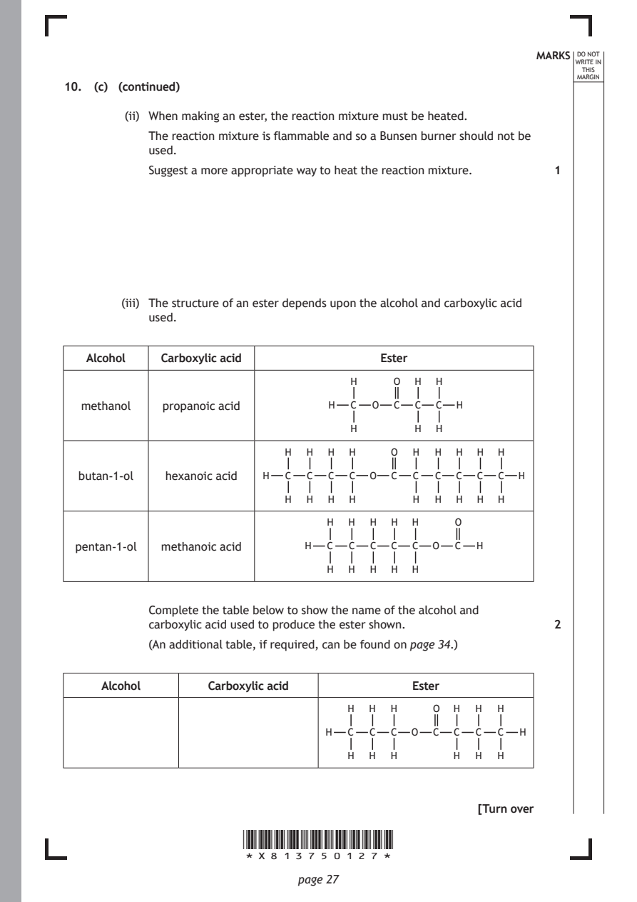
Selectable page text
MARKS _{W}^{D}_{R}^{O}_{I} _{T}^{N}OT
E IN
THIS
MARGIN
10. (c) (continued)
(ii) When making an ester, the reaction mixture must be heated.
The reaction mixture is flammable and so a Bunsen burner should not be
used.
Suggest a more appropriate way to heat the reaction mixture. 1
(iii) The structure of an ester depends upon the alcohol and carboxylic acid
used.
Alcohol Carboxylic acid Ester
H O H H
methanol propanoic acid H C O C C C H
H H H
H H H H O H H H H H
butan‑1‑ol hexanoic acid H C C C C O C C C C C C H
H H H H H H H H H
H H H H H O
pentan‑1‑ol methanoic acid H C C C C C O C H
H H H H H
Complete the table below to show the name of the alcohol and
carboxylic acid used to produce the ester shown. 2
(An additional table, if required, can be found on page 34.)
Alcohol Carboxylic acid Ester
H H H O H H H
H C C C O C C C C H
H H H H H H
[Turn over
*X813750127*
page 27PDF page 28
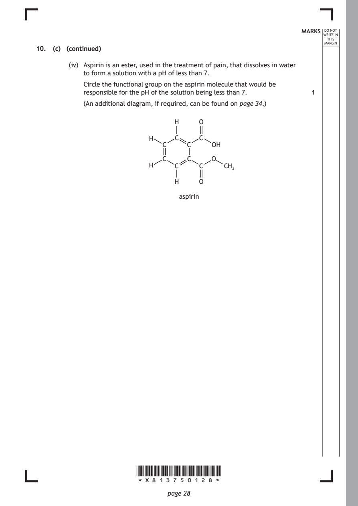
Selectable page text
MARKS _{W}^{D}_{R}^{O}_{I} _{T}^{N}OT
E IN
THIS
MARGIN
10. (c) (continued)
(iv) Aspirin is an ester, used in the treatment of pain, that dissolves in water
to form a solution with a pH of less than 7.
Circle the functional group on the aspirin molecule that would be
responsible for the pH of the solution being less than 7. 1
(An additional diagram, if required, can be found on page 34.)
H O
H C C
C C OH
C C O
H C C CH₃
H O
aspirin
*X813750128*
page 28PDF page 29
Paper 2, Question 11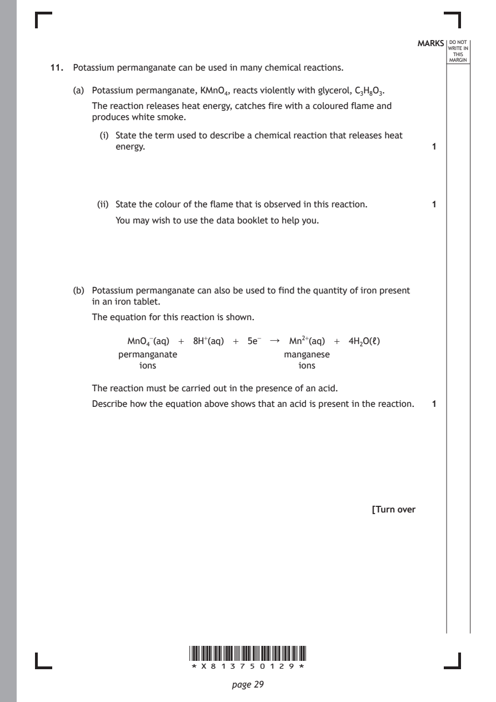
Selectable page text
MARKS _{W}^{D}_{R}^{O}_{I} _{T}^{N}OT
E IN
THIS
MARGIN
11. Potassium permanganate can be used in many chemical reactions.
(a) Potassium permanganate, KMnO₄, reacts violently with glycerol, C₃H₈O₃.
The reaction releases heat energy, catches fire with a coloured flame and
produces white smoke.
(i) State the term used to describe a chemical reaction that releases heat
energy. 1
(ii) State the colour of the flame that is observed in this reaction. 1
You may wish to use the data booklet to help you.
(b) Potassium permanganate can also be used to find the quantity of iron present
in an iron tablet.
The equation for this reaction is shown.
MnO₄⁻(aq) + 8H⁺(aq) + 5e⁻ ↓ Mn²⁺(aq) + 4H₂O(ℓ)
permanganate manganese
ions ions
The reaction must be carried out in the presence of an acid.
Describe how the equation above shows that an acid is present in the reaction. 1
[Turn over
*X813750129*
page 29PDF page 30
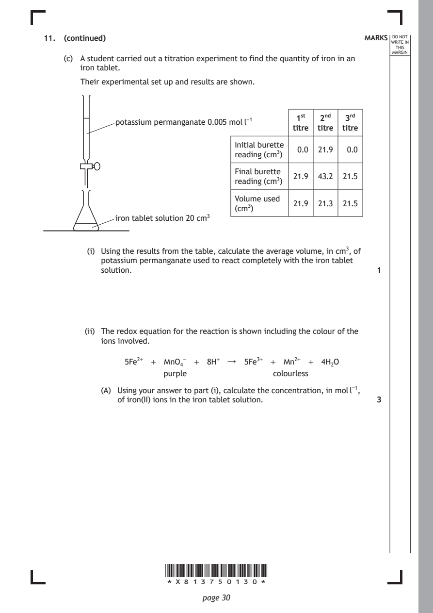
Selectable page text
11. (continued) MARKS _{W}^{D}_{R}^{O}_{I} _{T}^{N}OT
E IN
THIS
MARGIN
(c) A student carried out a titration experiment to find the quantity of iron in an
iron tablet.
Their experimental set up and results are shown.
1^{s}^{t} 2ⁿ^{d} 3^{r}^{d}
potassium permanganate 0.005 mol l⁻¹
titre titre titre
Initial burette
0.0 21.9 0.0
reading (cm³)
Final burette
21.9 43.2 21.5
reading (cm³)
Volume used
21.9 21.3 21.5
(cm³)
iron tablet solution 20 cm³
(i) Using the results from the table, calculate the average volume, in cm³, of
potassium permanganate used to react completely with the iron tablet
solution. 1
(ii) The redox equation for the reaction is shown including the colour of the
ions involved.
5Fe²⁺ + MnO₄⁻ + 8H⁺ ↓ 5Fe³⁺ + Mn²⁺ + 4H₂O
purple colourless
(A) Using your answer to part (i), calculate the concentration, in mol l⁻¹,
of iron(II) ions in the iron tablet solution. 3
*X813750130*
page 30PDF page 31
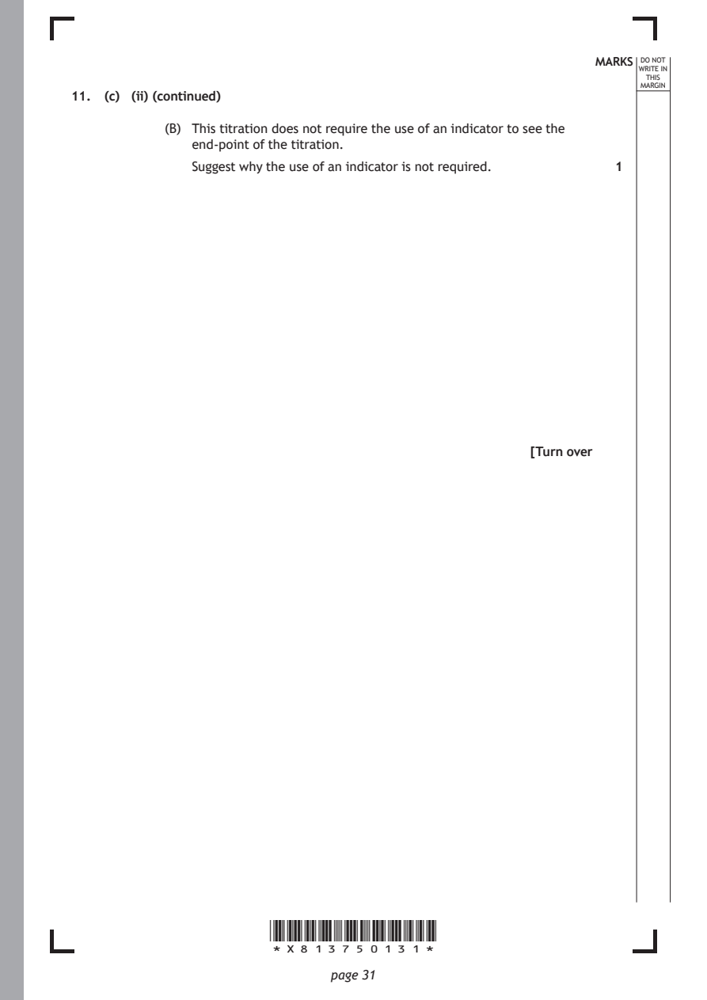
Selectable page text
MARKS _{W}^{D}_{R}^{O}_{I} _{T}^{N}OT
E IN
THIS
MARGIN
11. (c) (ii) (continued)
(B) This titration does not require the use of an indicator to see the
end‑point of the titration.
Suggest why the use of an indicator is not required. 1
[Turn over
*X813750131*
page 31PDF page 32
Paper 2, Question 12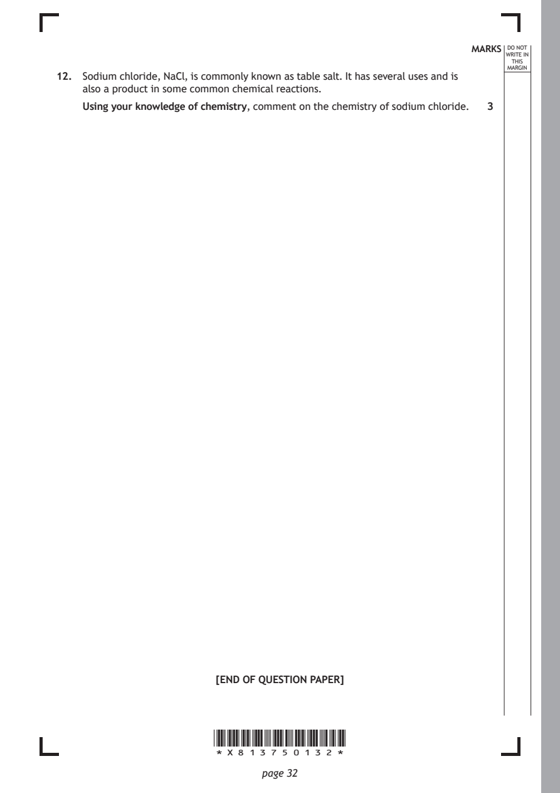
Selectable page text
MARKS _{W}^{D}_{R}^{O}_{I} _{T}^{N}OT
E IN
THIS
MARGIN
12. Sodium chloride, NaCl, is commonly known as table salt. It has several uses and is
also a product in some common chemical reactions.
Using your knowledge of chemistry, comment on the chemistry of sodium chloride. 3
[END OF QUESTION PAPER]
*X813750132*
page 32PDF page 33
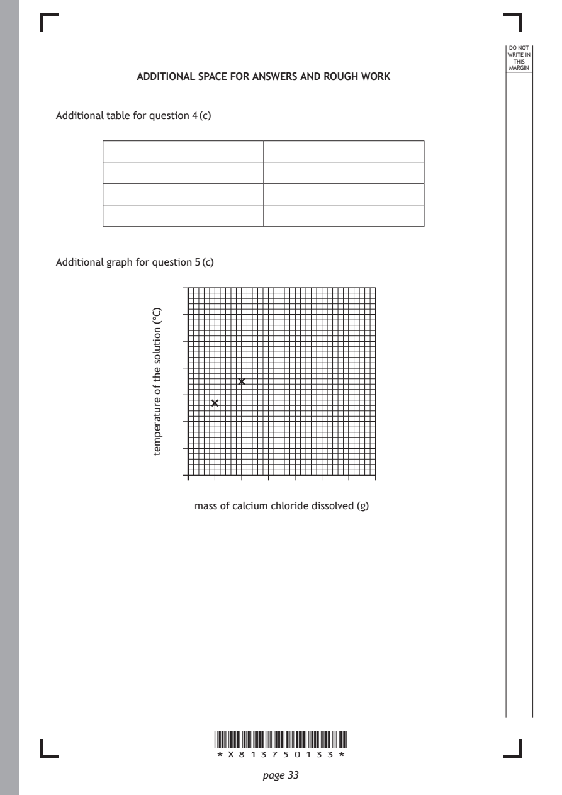
Selectable page text
DO NOT
WRITE IN
THIS
MARGIN
ADDITIONAL SPACE FOR ANSWERS AND ROUGH WORK
Additional table for question 4 (c)
Additional graph for question 5 (c)
mass of calcium chloride dissolved (g)
*X813750133*
page 33
)C°(
noitulos
eht
fo
erutarepmetPDF page 34
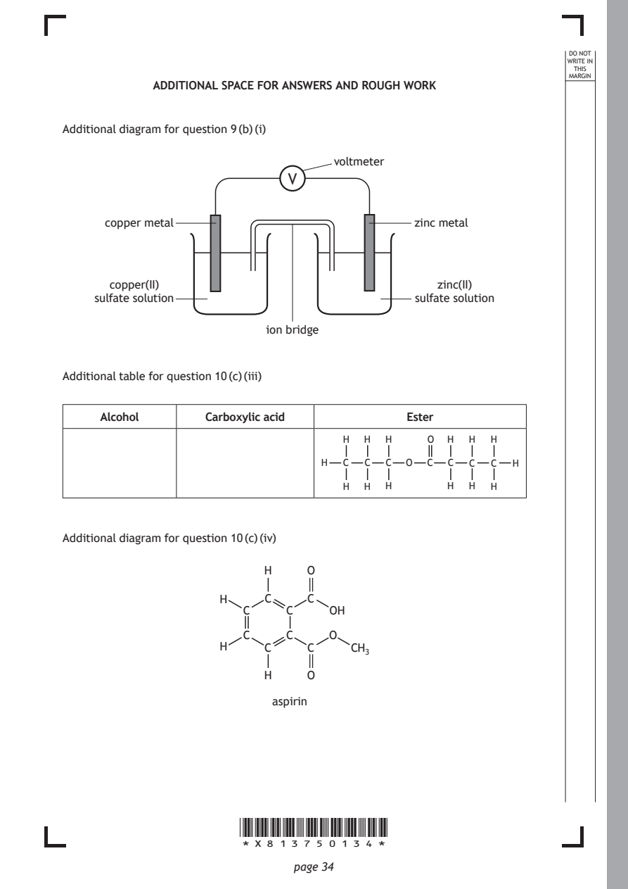
Selectable page text
DO NOT
WRITE IN
THIS
MARGIN
ADDITIONAL SPACE FOR ANSWERS AND ROUGH WORK
Additional diagram for question 9 (b) (i)
voltmeter
V
copper metal zinc metal
copper(II) zinc(II)
sulfate solution sulfate solution
ion bridge
Additional table for question 10 (c) (iii)
Alcohol Carboxylic acid Ester
H H H O H H H
H C C C O C C C C H
H H H H H H
Additional diagram for question 10 (c) (iv)
H O
H C C
C C OH
C C O
H C C CH₃
H O
aspirin
*X813750134*
page 34PDF page 35
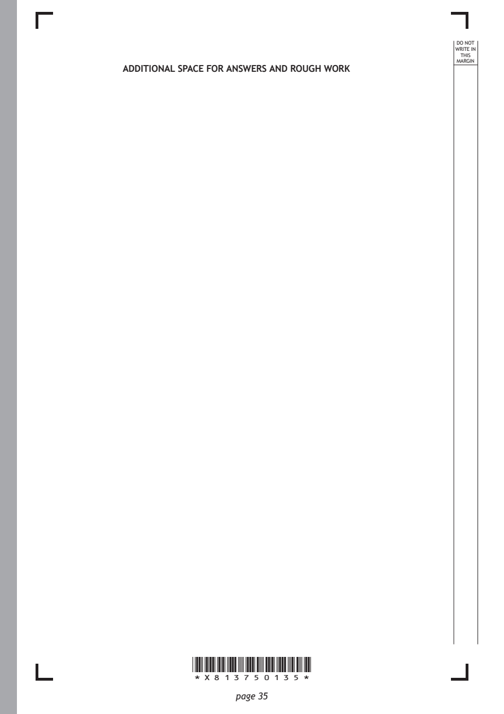
Selectable page text
DO NOT
WRITE IN
THIS
MARGIN
ADDITIONAL SPACE FOR ANSWERS AND ROUGH WORK
*X813750135*
page 35PDF page 36
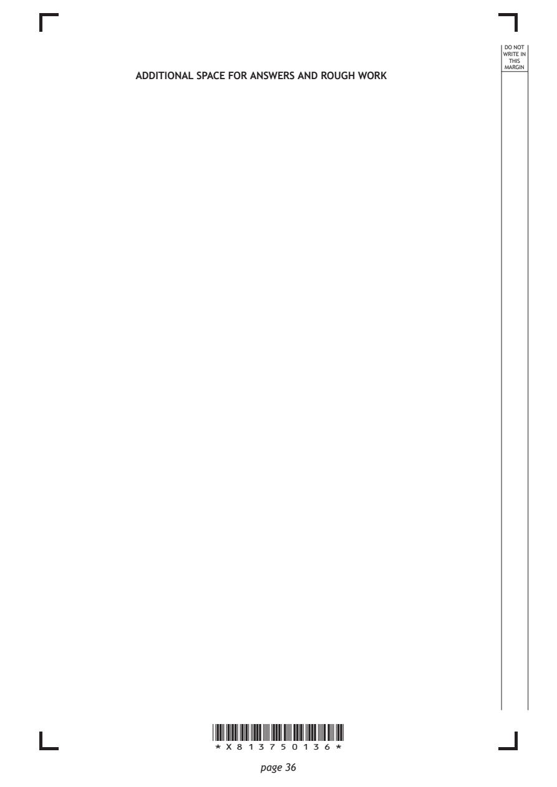
Selectable page text
DO NOT
WRITE IN
THIS
MARGIN
ADDITIONAL SPACE FOR ANSWERS AND ROUGH WORK
*X813750136*
page 36